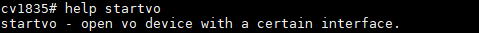
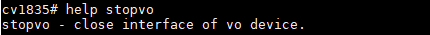
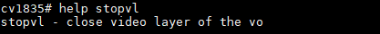

2. Startup Screen User Guide¶
This guide explains how to display the startup screen in U-Boot and AliOS.
3. uboot¶
ubootThe following functions are provided:
Provides control of the VO device in the boot environment, including different VO interfaces and timings.
Provides control of the VL video layer in the boot environment.
Provides background-color configuration for the VO device in the boot environment.
The default format of the VL video layer is YUV420 PLANAR.
3.1. ubootCommands¶
- startvo： VODevice
Parameters: device number, interface type, and timing.

<dev> Device number; see Figure 1-1
<intf-type> Interface type; see Figure 1-1
<timing> Timing
<> MIPI_TX、LVDS、I80notRefer toTiming ， before driver SettingsTiming
The standard timings on CV184X are as follows:
2(1080P24), 3(1080P25), 4(1080P30), 5(720P50) , 6(720P60) , 7(1080P50) , 8(1080P60), 9(576P50), 10(480P60), 11(800x600)
- stopvo：DisableVODevice
Parameter: device number

<dev> Device number; see Figure 1-1
- startvl： VLVideo Layer
Parameters: video layer number, image file address, video address, image file size, and VO alignment

<layer> Video layer number; see Figure 1-1
<addr_in> Image File Address
<addr_out> Video Address
<size> Image File Size
<alignment> VOAlignment
- stopvl：DisableVLVideo Layer
Parameter: video layer number

<layer> Video layer number; see Figure 1-1
- setvobg：SettingsVODeviceBackground Color
Parameters: device number and background color
<dev> Device number; see Figure 1-1
<bgcolor> Background Color (10bit RGBarrangement: bit[29:20] is R, bit[19:10] is G, and bit[9:0] is B)
Figure 1-1
Processor Type |
Device |
Video Layer |
Graphics Layer |
Interface Category |
|---|---|---|---|---|
CV184X |
[0] |
[0] |
[0] |
64(BT.1120), 1024(LCD_18BIT), 2048(LCD_24BIT), 4096(LCD_30BIT), 8192(MIPI_TX), 65536(I80) |
Figure 1-2
Processor Type |
Maximum Video Layer Resolution |
Maximum Graphics Layer Resolution |
|---|---|---|
CV184X |
1920x1080 |
1920x1080 |
3.2. ubootFunction-Related Code¶
cmd/Makefile
cmd/cvi_vo.c
drivers/video/Makefile
drivers/video/cvitek/ (contains the following subdirectories)
include/cvitek/cvi_disp.h
include/cvitek/cvi_mipi.h
include/cvitek/cvi_lvds.h
include/cvitek/cvi_i80.h
include/cvitek/cvi_panels/ (contains the following subdirectories)
3.3. ubootCommand Example¶
followingwithCV184XProcessorOperation，ConfigurationDeviceDHDofTimingMIPI_TX 720*1080@60Outputas an example。
<> DDR Figure Addressnot ，Please Processor UseDDRAddress。
Load the JPEG file into memory
fatload mmc 1:1 0x84080000 logo.jpg
Decode JPEG into memory (cvi_jpeg jpg_buf_addr dest_buf_addr jpg_size)
cvi_jpeg 0x84080000 0x82080000 0x80000
DHD0Device
startvo 0 8192 0 (MIPI_TX) startvo 0 1024 0 (single-link 6-bit LVDS) startvo 0 2048 0 (single-link 8-bit LVDS) startvo 0 4096 0 ( 10bit LVDS， notSupport) startvo 0 65536 0 (I80)
VLVideo Layer
startvl 0 0x84080000 0x82080000 0x80000 16
SettingsVOBackground Colorblack
setvobg 0 0x00000000
VLVideo LayerDisable
Stopvl 0
DHD0DeviceDisable
Stopvo 0
3.4. Use and Startup Screen¶
3.4.1. Prepare the Startup Image¶
SDK Provide build/tools/common/bootlogo/process_images.py Tools，can convert the original image to the format required by the SDK logo.jpg format (raw MJPEG stream).
Install dependencies:
apt install ffmpeg python3-pil
Usage examples:
Single image (U-Boot supports only one image), portrait 720x1280 rotated by 90 degrees:
python build/tools/common/bootlogo/process_images.py \
-i my_logo.png -o bootlogo/ -r 720 1280 --rotate 90
Single image, no rotation, using the original image resolution:
python build/tools/common/bootlogo/process_images.py \
-i my_logo.png -o bootlogo/
Parameter description:
-iInputFigure Path（Support jpg/png）-oOutputContents（Default beforeContents，Generate logo.jpg）-rOutputResolution WIDTH HEIGHT（not withInputFigure is ）--rotateRotation angle: 0/90/180/270
Generate logo.jpg Then continue with the following configuration steps.
will Figure logo.jpg (I80 Need toBMP FigureFile)Copy under the directory bootlogo/logo.jpg。
inbuild/boards/cv184x/cv184x_wevb/u-boot/cv184x_defconfigConfigurationCONFIG_BOOTLOGOisy。
IfneedUsereset、power、backligtFunction，needinbuild/boards/default/dts/cv184x/cv184x_base.dtsiinofvoNodeAddgpioRelatedInformationIf：
reset-gpio = <&porte 2 GPIO_ACTIVE_LOW>; pwm-gpio = <&porte 0 GPIO_ACTIVE_HIGH>; power-ct-gpio = <&porte 1 GPIO_ACTIVE_HIGH>;
Build UsemenuconfiginSDK optionsinEnablePack BOOTLOGO， Configuration willlogo.jpgPackagetoBurningFile。
Useunder CommandsBuildBSP。
source build/envsetup_soc.sh defconfig cv184x_wevb menuconfig Build_all
3.5. Precautions¶
ConfigurationStartup Screen，ThroughBT.1120/656Interface ， ProcessorofDriverneed PortingImplementation。
IfStartup ScreenUseof MIPI_TX、LVDSorI80Interface ，If notSupportofmipi_dsi、lvdsor i80 panel，canRefer tou-boot-2021.10/include/cvitek/cvi_panels ofheaders，Add ofheader。 u-boot-2021.10/include/cvitek/cvi_panels/cvi_panels.h panelModify can not ofmipi_dsi、lvdsori80 panel。
Use and Startup Screen ，need CV184x_asic.dtsi Configuration Memory (Defaultis0x82080000)，andEnsureu-boot/include/configs/CV184x-asic.hinof LOGO_RESERVED_ADDR Settingsis Memory 。
4. alios¶
aliosStartup Screen before SupportMIPI_DSIInterface，Provide linux ofmipi_tx_xxInterface(canRefer toScreen_Docking_Guide.pdfofMIPI_DSIChapter )。UserThroughinsolutionin InterfaceImplementationVODeviceofInitialize。
4.1. Enable the AliOS Startup Screen¶
incvi_alios/components/cvi_mmf_sdk/cvi_middleware/cvi_panelunderAddpanelofheader，canRefer toScreen_Docking_Guide.pdforalreadySupportpanelImplementationcombo_dev_cfg_setc.DataStructure。
incvi_alios/components/cvi_mmf_sdk/cvi_middleware/cvi_panel/dsi_panels.hinImplementation panelofpanel_desc_sStructure 。
incvi_alios/solutions/normboot/package_yamls/package.yaml.turnkeyinAddconfigOptionand If：
CONFIG_PANEL_HX8394: 1 //Other screens can be added CONFIG_RTOS_INIT_MEDIA: 1 CONFIG_SUPPORT_VO: 1 CONFIG_ALIOSLOGO: 1
incvi_alios/solutions/normboot/customization/cv1842hp_gc8613/pipeline/custom_moduleparam.cinModifyConfigurationIf：
.alios_sys_mode = 0, .alios_vi_mode = 0, .alios_vpss_mode = 0, .alios_venc_mode = 0, .alios_vo_mode = 1,
incvi_alios/solutions/normboot/customization/cv1842hp_gc8613/pipeline/custom_voparam.cinModifyConfigurationIf：
.u8Bindmode = false, //Other screens can be added #if (CONFIG_PANEL_HX8394 == 1 || CONFIG_PANEL_ILI9488 == 1 || CONFIG_PANEL_OTA7290B == 1) .u8VoCnt = 1, #else .u8VoCnt = 0, #endif
IfneedUsereset、power、backligtFunction，needincvi_alios/solutions/normboot/customization/cv1842hp_gc8613/src/custom_platform.cinPLATFORM_PanelInit()Interface AddgpioRelatedInformationIf：
#if (!defined(CONFIG_SUPPORT_VO) || (CONFIG_SUPPORT_VO)) #if CONFIG_PANEL_HX8394 u8 pw_port, pw_pin, bl_port, bl_pin, rst_port, rst_pin; pw_port = 4; pw_pin = 1; bl_port = 4; bl_pin = 0; rst_port = 4; rst_pin = 2; _GPIOSetValue(pw_port, pw_pin, 1); _GPIOSetValue(bl_port, bl_pin, 1); _GPIOSetValue(rst_port, rst_pin, 1); udelay(20 * 1000); _GPIOSetValue(rst_port, rst_pin, 0); udelay(20 * 1000); _GPIOSetValue(rst_port, rst_pin, 1); udelay(20 * 1000);
4.1.1. Prepare the Startup Image¶
SDK Provide build/tools/common/bootlogo/process_images.py Tools Generate logo.jpg。
Install dependencies:
apt install ffmpeg python3-pil
Usage examples:
Single image:
python build/tools/common/bootlogo/process_images.py \
-i my_logo.png -o bootlogo/ -r 720 1280 --rotate 90
Multiple images (AliOS supports animated logos and plays multiple JPEGs in sequence):
python build/tools/common/bootlogo/process_images.py \
-i ./frames/ -o bootlogo/ -r 720 1280 --rotate 90 -f 15
Parameter description:
-iInputFigure orFile Path-oOutputContents-rOutputResolution WIDTH HEIGHT--rotateRotation angle: 0/90/180/270-f（fps）， Figure ModeValid，Default 10
： mustSettings ``CONFIG_RTOS_LOGO_SIZE``，This value must be greater than the actual logo.jpg FileofSize， Memorynot Release。
Generate logo.jpg Then continue with the following configuration steps.
will Figure logo.jpg Copy under the directory bootlogo/logo.jpg，BuildSDK，Build UsemenuconfiginSDK optionsinEnablePack BOOTLOGO，Commandas follows：
source build/envsetup_soc.sh defconfig cv184x_wevb menuconfig Build_all
4.2. aliosStartup Screen Principle¶
will Figure logo.jpg Copy $BOOTLOGO_PATH，BuildSDK。
incvi_alios/components/cvi_platform/media/src/media_logo.cCodein， VDEC_STREAM_SStructure ，and pu8Bufetc. MacroCVIMMAP_RTOS_LOGO_ADDR， Address logo.jpgData。
CVI_VB_Init()InitializeVB。
InitializeVDECDevice(canRefer toMediaProcessingSoftwareDevelopmentReference_zh.pdf Chapter)。
Call CVI_VDEC_SendStream() to send JPEG data to VDEC for decoding.
CVI_VDEC_GetFrame()Get CompleteofVIDEO_FRAME_INFO_SStructure 。
CVI_VO_SendLogoFromIon() ， Interface before SupportNV21 。